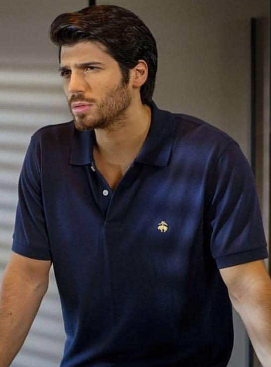

Ferit Aslan
Played by Can Yaman
A wealthy, well-known businessman who keeps his life in perfect order. Ever since his mother's affair he has distrusted people, especially women. Taking in his orphaned nephew Bulut forces him to open his home, and his heart.